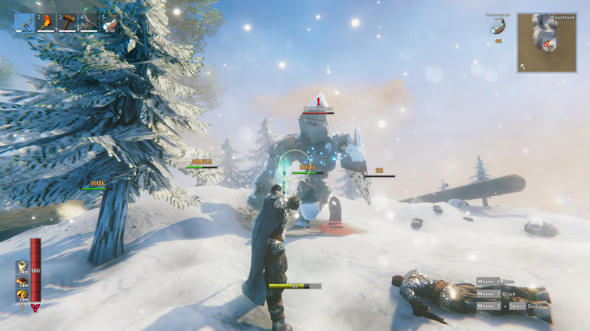
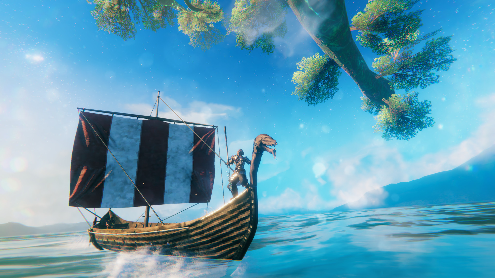
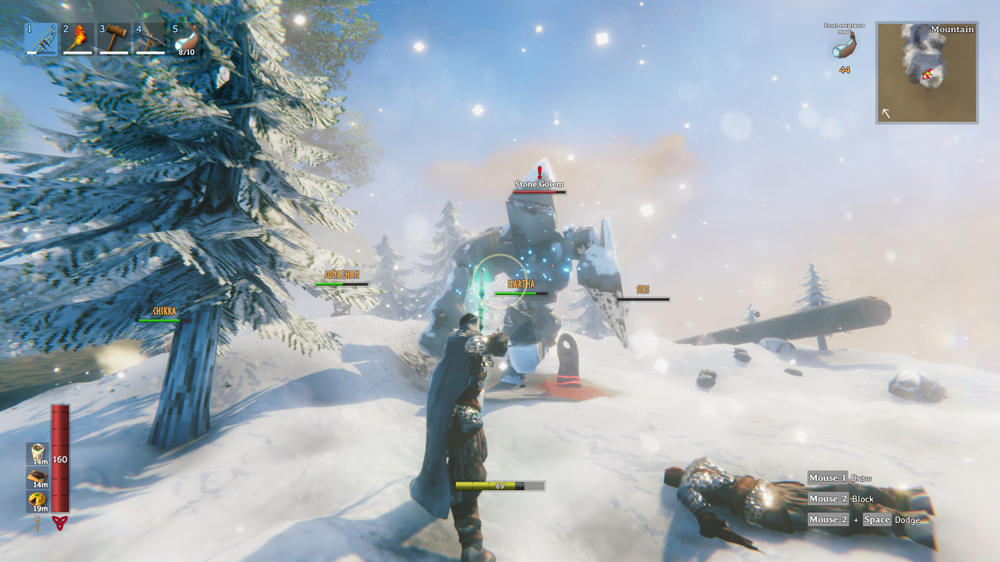
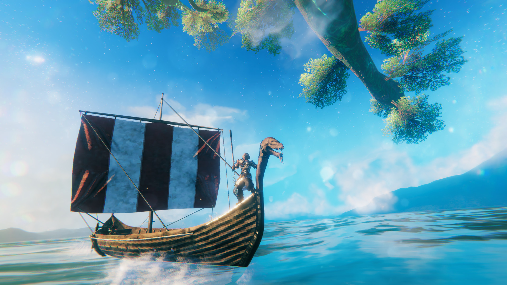

VALHEIM

북유럽 신화를 바탕으로 한 오픈 월드 생존 게임
북유럽 신화를 바탕으로 한 오픈 월드 생존 게임

 



Valheim은 북구 신화와 바이킹 문화에 기반한 방대한 판타지 세계를 탐험하는 게임입니다.
당신은 발하임 중심부의 비교적 평화로운 지역에서 모험을 시작합니다.
중심부에서 멀리 나갈수록, 세계는 점점 험해지죠. 대신 더 값나가는 재료를 구해,
더 무시무시한 무기와 더 튼튼한 방어구를 제작할 수 있습니다.
또한 세계 각지에 바이킹의 성채와 전초기지를 건설할 수도 있죠.
그리고 마침내 거대한 바이킹 함선을 건조하여 이국 땅을 찾아 망망대해를 항해하게 됩니다...
하지만 너무 멀리 항해하지 않게 조심해야 할 것입니다...
| 개발 | Iron Gate AB |
| 유통 | Coffee Stain Publishing |
| 플랫폼 | Xbox Series X|S | Xbox One | Microsoft Windows | Linux |
| ESD | Microsoft Store | Steam |
| 장르 | 오픈 월드 생존 게임 |
| 출시 | 앞서 해보기 2021년 2월 2일 |
| 엔진 | 유니티 |
| 한국어 지원 | 자막 지원 |
| 심의 등급 | 심의 없음 |
| 구분 | 최소 사양 | 권장 사항 |
|---|---|---|
| Windows | ||
| 운영체제 | Windows 7 64-bit 이상 | |
| 프로세서 | 2.6 GHz Dual Core or similar | Intel i5 3GHz or Ryzen 5 3Ghz |
| 메모리 | 8 GB | 16 GB |
| 그래픽 카드 | GeForce GTX 950
Radeon 7970 (VRAM: 2GB) |
GeForce GTX 1060 Radeon RX 580 |
| API | DirectX 11 | DirectX 11, Vulkan |
| 저장 공간 | 1.37GB | |

압도적으로 긍정적 (95%)
(평가 366,753 개)
객관적으로 검은사막, 로스트아크 등의 게임에 비해 그래픽이 엄청난 게임이 아니다.
물체의 텍스쳐를 가까이서 본다면 꽤나 각져 보인다.
약간 아쉬운 면이 있지만 게임의 용량이 1GB임을 감안해도
전혀 촌스럽거나 구진 느낌이 없는 그래픽으로 느껴졌다.

이게임은 매우 다양한 건축재료와 구조물로 어떠한 건물이든 손가락만 따라간다면
뭐든지 만들 수 있으며 무게 시스템 등으로 높은 건물을 지으려면 지지대가 필요한 등의
나름의 현실성도 구현되어 있다.
무엇보다 가장 큰 장점은 대충 건물을 지어도 멋있어 보인다는 점이다.


전투가 꽤나 재미있다.
무기의 종류도 꽤나 다양하고 타격감도 좋다.
지역마다 다른 여러 몬스터들은 약점과 강점이 다 정해져있고
몬스터에게 강력한 무기를 사용하여 쉽게 잡을 수 도 있다.
필요한 아이템을 바쳐 소환이 가능한 보스들은 패턴을 외워가며 잡는 재미가 있고
패링과 구르기등의 여러 기술들 또한 전투를 스릴넘치게 만들어준다.
그밖에도 던전이나 유적지, 파괴된 마을, 고블린 마을들을 탐험 할 수 있고농사, 낚시, 채집등 여러 할일들이 있다.
아직 얼리어엑세스라 엔딩이 정해져 있지는 않지만 6번째 보스를 잡는게 게임의 최종목표이다.
게임의 완성도는 얼리어엑세스치고 상당히 높으며 같이할 친구만 있다면 더욱더 재미있게 할 수 있다.
나 또한 지금껏 여러 생존게임을 해봤지만 발헤임은 매우 재밌는 게임에 속하며
아직 개발단계인만큼 앞으로의 발전사항이 매우매우 기대된다.